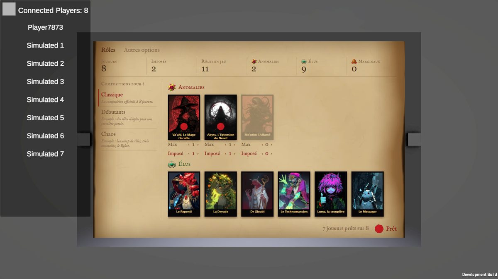

Tes votes du tour 4 : P3 (les compositions dans la marge) 👍 mais police peu lisible ; les mots W2 (Au plus /
Au moins) 👍 ; et les petites explications semées à des endroits au hasard font IA (noté en mémoire et dans ta
liste de UI slop).
L'original

P3 du tour 4
Plus aucune petite explication : les compositions n'ont plus de description, plus de « restera factice »,
plus d'italique. Il reste les libellés, les chiffres, et la raison d'un refus à la place du « prêts » (sa
place prévue).
Mots W2 partout : « Garantis », « Rôles possibles », « Au plus », « Au moins ».
La lisibilité venait surtout des petites tailles en IM Fell (petites capitales à 14 px, italique à 13 px) :
trois réglages de police ci-dessous, même écran, mêmes données. « Débutants » et « Chaos » restent des exemples.
1. La police
Touche une composition, ou un « ‹ › » pour voir « Personnalisée » apparaître.
F1IM Fell partout, en plus grand
La police du livre des personnages partout, mais aucun texte sous 16 px, plus de petites
capitales pour les libellés ni d'italique. Le plus « livre », mais Fell reste une police d'imprimerie ancienne,
un peu irrégulière.
F2Fell pour les titres, Liberation Sans pour le reste
Les titres (onglets, factions, « Compositions », « Prêt ») en IM Fell ; les libellés, chiffres et
réglages dans la police sans empattement déjà dans le jeu. Le plus net en petit, mais le corps du texte
retrouve un air d'interface.
F3Fell pour les titres, un serif de lecture pour le reste
Même partage que F2, mais le reste dans un serif fait pour lire (Georgia sur la maquette ; dans
le jeu il faudrait ajouter une police libre du même genre, EB Garamond par exemple). Garde l'esprit livre et
reste net en petit.